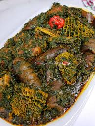

Afang Recipe

This is a traditional vegetable soup that is native to the Akwa-Cross region of Nigeria. It is made with Afang leaves and waterleaf or spinach.
Ingredients
- Afang Leaves
- Spinach or Waterleaf
- Palm Oil
- Stock Fish
- Crayfish
- Beef
Cooking Steps
- In a pot boil goat meat, add salt, water and seasoning cube. Allow to cook. When it is half way cooked, add pre-boiled Ponmo, washed and deboned smoked fishes, smoked prawns, crayfish, stir and allow to cook some more till it is done and the liquid level is reduced.
- Chop and wash Waterleaf with a scrubbing method (see this video for demonstration), set in a sieve to drain.
- Wash Afang leaves and slice them. Next it would need to be pounded (with crayfish) or an easier method I use is place it in a blender, add some water and blend.
- Add washed Waterleaf to the pot of boiling meats and fishes, add periwinkle, more crayfish and season to taste.
- Cover and allow to cook some more for 5 minutes, you will notice the Waterleaf will release water and if your initial stock was not properly reduced, your soup may end up being too watery.
- Serve with Eba or my favourite, Fufu.